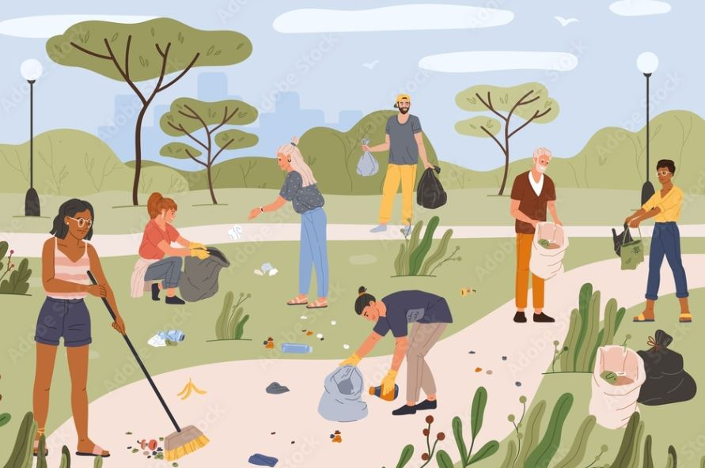

Welcome
This mini site shares neighborhood announcements, events, and resources. It also highlights our local pet adoption partners so more animals can find safe homes.
Quick links: Adopt a pet, Events, Resources

Pets bring neighbors together too:

Upcoming events
Dates and times are examples for this project. You can edit them to match your own local area.
| Event | Date | Time | Location |
|---|---|---|---|
| Neighborhood Clean-Up | Saturday | 9:00 AM | Westcliff Park (meet by the playground) |
| Pet Adoption Pop-Up | Sunday | 11:00 AM | Community Center Lobby |
| Food Pantry Drive | Wednesday | 4:30 PM | Library Drop Box |
| Town Hall Q&A | Thursday | 6:00 PM | City Hall Room 2B |
What to bring
- Reusable gloves and a water bottle
- Closed-toe shoes
- Any canned goods for the pantry drive
- A pet photo if you want to share in our “Found a Friend” board

Community resources
Quick links for local help, city services, and pet support. These are public sites you can use for research.
City & neighborhood
Pets & adoption
Quick checklist (adoption-ready home)
- Choose a safe space for the first few days (quiet room or crate area).
- Buy basic supplies: food, bowl, leash, collar, ID tag, litter box (for cats).
- Schedule a vet visit within the first 7–14 days.
- Plan daily routine: meals, walks, playtime, and training.
Contact
This is a sample contact section for a class assignment. Replace the info with your own local details.
Community Board Email
Phone
Office hours
- Mon–Fri: 10:00 AM – 5:00 PM
- Sat: 10:00 AM – 1:00 PM
- Sun: Closed